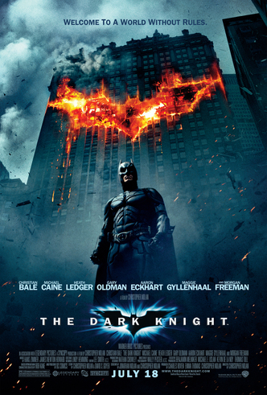

"What doesn 't kill you makes you stranger."
- The Joker"Some men just want to watch the world burn."
- Alfred
The Dark Knight was the first comic book movie to hit a billion dollars in box office. Unsurprisingly, it was not the last.
Christian Bale’s much-parodied growl wasn’t entirely his decision. His real voice during filming was more toned down but, on Nolan’s orders, was made rougher and grittier during post-production. Yes, kids. That was on purpose. Don’t mock.
Though The Dark Knight is its own, unique story, it drew inspiration from several different Batman comics. Specifically, much of the Joker’s characterization was taken from the 1988 graphic novel The Killing Joke, which provided the villain’s origin. Harvey Dent’s descent into madness also came from the comics, this time from a series called The Long Halloween.